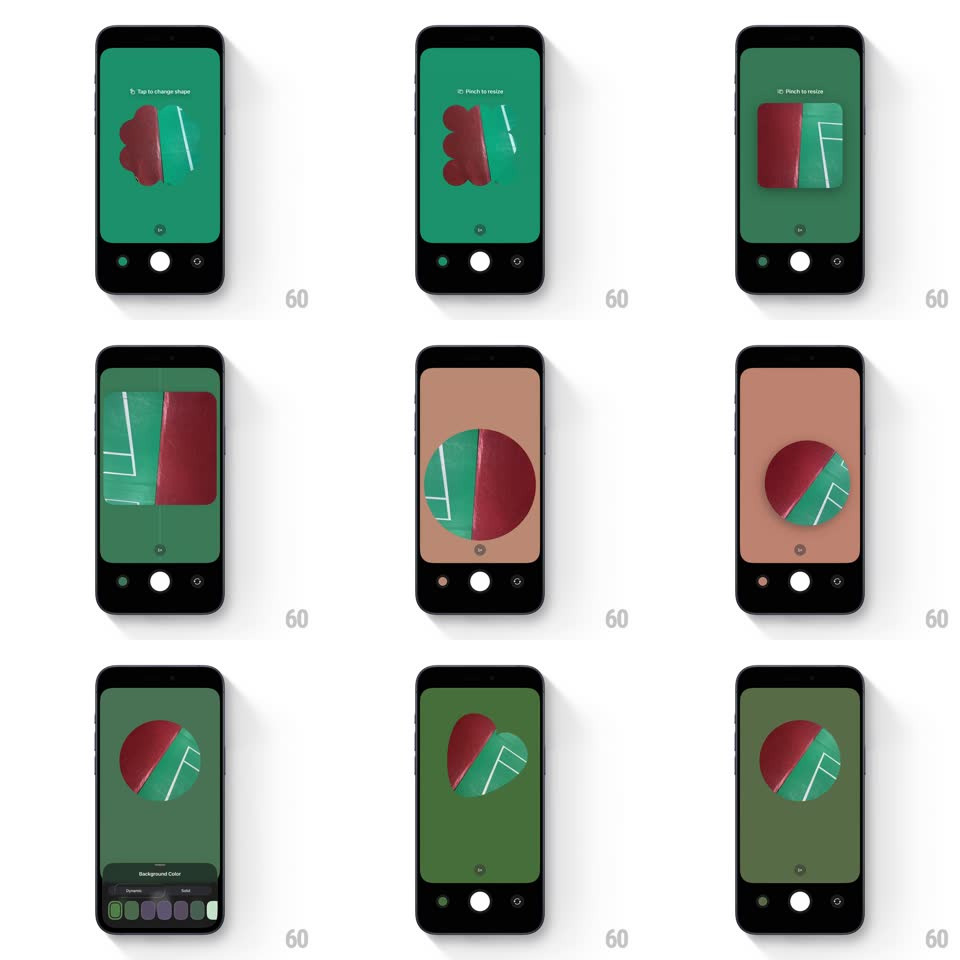

Media
Frame-by-frame

Rebuild this interaction 1:1: Biscuit's camera mask customizer - tap the viewfinder to morph the mask shape, pinch to resize it, drag to reposition, and pick a background color that recolors the whole frame.

Rebuild this interaction 1:1: Biscuit's camera mask customizer - tap the viewfinder to morph the mask shape, pinch to resize it, drag to reposition, and pick a background color that recolors the whole frame.
## Integration
Integration: stack-agnostic spec - springs given as stiffness/damping, timed motions as duration + curve; map every value to your framework and animation library of choice.
## Scene
A full-bleed camera viewfinder with a solid background color (deep green, tan), a photo visible only through a central mask shape (blob, rounded rect, circle), and the camera chrome: shutter button bottom center, flip and library buttons flanking it. Hints appear up top ("Tap to change shape", "Pinch to resize"). A "Background Color" row of swatches slides up from the bottom when summoned.
## Motion spec
Pattern: gesture-driven mask editing - tap morphs, pinch scales, drag moves, swatches recolor.
- Tap the mask: it morphs to the next shape (blob -> rect -> circle, path interpolation, 350ms, ease-in-out) - the photo's visible area reshapes fluidly, no cut.
- Pinch: the mask scales 1:1 with the gesture (live, no easing) and settles with a small spring (~380/18) on release; size persists.
- Drag: the mask follows the finger 1:1 with a slight lag-free ease; on release it glides to rest (spring ~300/20) wherever you leave it - no snapping grid.
- Background color: tapping a swatch crossfades the entire backdrop color (250ms) - the whole screen's mood flips at once; the swatch row itself slides up (spring ~320/20) and away.
- The mask's photo content parallaxes subtly against the mask edge when dragged (4px counter-drift) so the hole feels cut, not pasted.
## Calibration
- Every gesture is direct-manipulation 1:1 - any easing during the gesture itself reads as lag.
- The morph must interpolate the actual shape path - a crossfade between shapes is a different, lesser effect.
## Reduced motion
Tap swaps shapes with a 200ms crossfade; drag/pinch stay direct (they are the interaction).
## Don't miss
- The hint text ("Tap to change shape") lives inside the frame and rotates with context - teach by whispering, not modals.
- The shutter button never moves - editing chrome orbits it.